Иллюстраторы, у которых картинка смешная, а персонаж смотрит с каменным лицом.
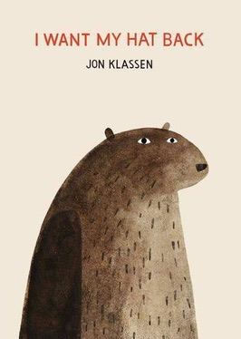
Зрачки сдвинуты вбок, рта нет: вся шутка во взгляде искоса.
Открытки в магазине музея Эрика Карла ↗ Обложка «I Want My Hat Back», 2011 · © Jon Klassen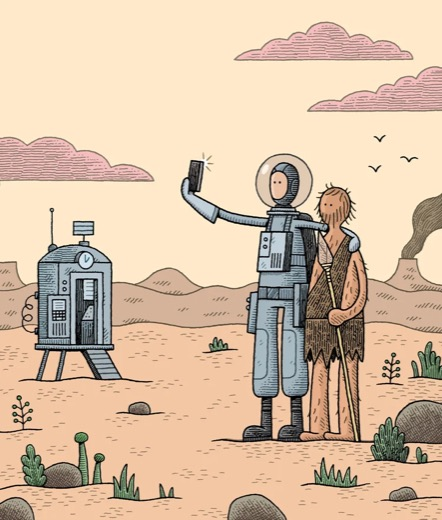
Лицо из двух точек и черты брови, кремовый фон, два-три приглушённых цвета. Много шуток про книги.
Портфолио ↗ Иллюстрация с tomgauld.com · © Tom Gauld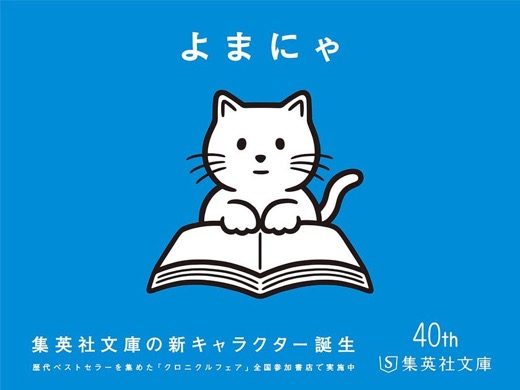
Одна ровная линия, сплошная чёрная заливка, глаза-точки. Автор кота-книгочея Ёмани издательства Shueisha Bunko.
Ёманя на noritake.org ↗ Ёманя для Shueisha Bunko · © Noritake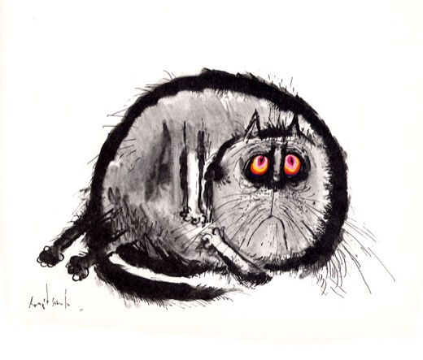
Колючая линия пера разной толщины, кляксы туши. Толстые самодовольные коты и сатира на школу.
Коты в блоге-трибьюте ↗ Кот, скан из блога-трибьюта · © наследники Рональда Сёрла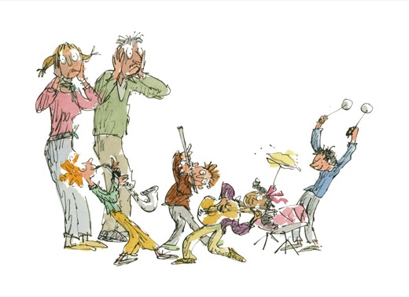
Быстрая дрожащая линия и акварель за краями. Характер виден по позе всего тела.
Галерея ↗ «Musicians in March» · © Quentin Blake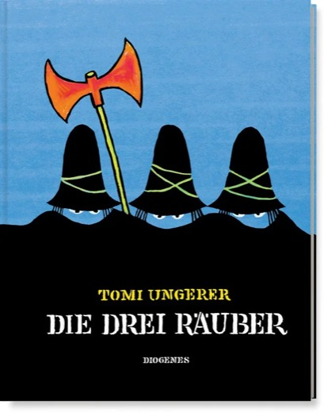
Чёрные фигуры, видны только глаза, одно красное пятно. Страшные с виду часто оказываются добрыми.
Детские книги ↗ Обложка «Трёх разбойников», Diogenes · © наследники Унгерера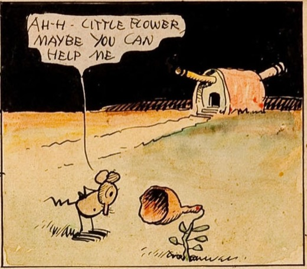
«Krazy Kat»: нервная линия, пустыня из пары штрихов, надписи от руки. Мышонок Игнац — вредный.
Полосы в Википедии ↗ Krazy Kat, 1922 · общественное достояние«The Far Side»: звери с каменными мордами посреди абсурда, одна картинка и одна сухая фраза.
The Far Side ↗ Гэри Ларсон просит не перепечатывать его рисунки. Они — на его сайте.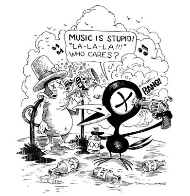
«Maakies»: старинная газетная штриховка и ворон-циник Drinky Crow с тяжёлыми веками. Для взрослых.
Галереи ↗ Drinky Crow с друзьями, с maakies.com · © Tony Millionaire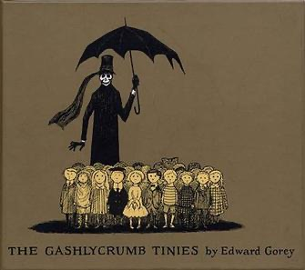
Спокойные лица посреди беды, чёрное из тонкой сетки штрихов.
Википедия ↗ Обложка «The Gashlycrumb Tinies», 1963 · © Edward Gorey Charitable Trust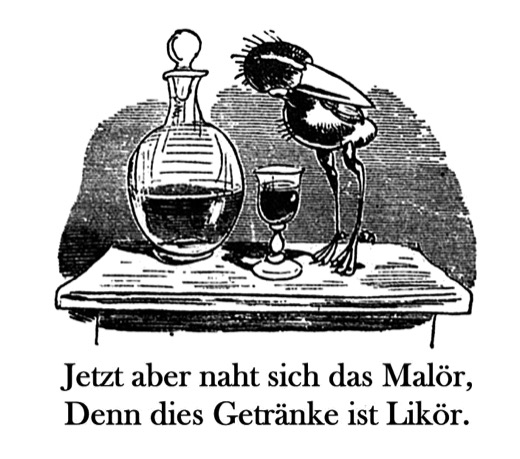
Истории в картинках: чёрный силуэт читается по позе. Ганс Хукебайн — ворон с дурным характером.
Буш в Википедии ↗ «Ганс Хукебайн», 1867 · общественное достояние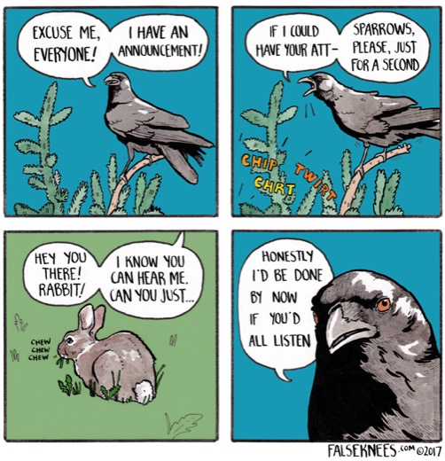
«False Knees»: почти настоящие птицы акварелью и тушью, сухие диалоги.
Этот комикс на falseknees.com ↗ «Crow Gets No Respect!», 2017 · © Joshua Barkman